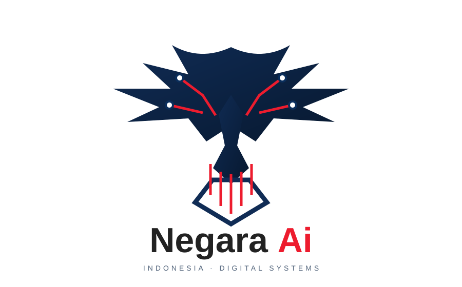

PUBLIC SYSTEM DASHBOARD / ROOT .
Satu pintu.
Seluruh sistem.
Satu pintu untuk seluruh sistem Planetbintang—repositori, file, media, proyek, delivery, dan AI Reber. Mulai dari chat Reber atau jelajahi identitas AI Global dan Negara AI.

NEGARA AIIdentitas AI berorientasi IndonesiaAntarmuka mengadopsi pola kerja umum tiap platform; konektor dan data live ditandai apa adanya.
PLANETBINTANG SISTEMMODEL PLANETBINTANG VERSI 1
GALAXYVERSI 1
ALAMSEMESTAVERSI 1
LISTRIKMAGNETVERSI 1
SYSTEM FLOW / ROUTE MATRIX
Blok perpindahan sistem
Setiap blok membuka menu kerja terkait dengan transisi terarah, status route, dan fokus panel aktif.
WORKSPACE / PLANETBINTANG
Ruang kerja sistem
Kelola tugas lokal, telusuri kode, dan pantau metadata repo. Perubahan lokal tetap berada di sistem snapshot ini.
PBWorkspace lokalData tersimpan di browser ini
OVERVIEW / 01
Proyek & papan tugas
Susun pekerjaan per repositori dalam papan lokal sederhana.
Papan ini tersimpan di localStorage browser ini. Belum tersinkron sebagai Project GitHub.
ISSUE TRACKER / 02
Masalah & diskusi
Catat masalah, labeli, ubah status, dan tambahkan komentar secara lokal.
Masalah lokalUrut terbaru
Pilih masalah di daftar atau buat masalah lokal baru.
CODE WORKSPACE / 03
Penampil & editor draft
File yang tersedia pada snapshot lokal dapat dimuat. Edit disimpan sebagai draft lokal dan tidak melakukan commit/deploy.
Pilih file dari File Manager. Isi repo privat mengikuti data yang tersedia pada snapshot lokal.
Belum ada perubahan
Draft disimpan hanya pada browser perangkat ini. Tidak ada file privat yang diambil dari server publik; tidak ada tombol tulis, run, atau deploy otomatis. Perubahan tetap tersimpan sebagai draft lokal.
ANALYTICS / 04
Analitik sistem
Ringkasan nyata dari snapshot repo dan pohon Git; bukan metrik pengunjung situs.
Bahasa utama terdeteksi
Jenis sistem
Visibilitas repositori
Aktivitas lokal workspace
Tugas dan masalah lokal hanya terlihat pada browser ini.AI REBER / 06
Re:Bersama di workspace Planetbintang
Chat Reber terpasang di dalam menu .L dan membaca workspace File Manager yang sama.
ACCOUNT SETTINGS / 05
Pengaturan akun & workspace
Preferensi lokal, tidak mengubah identitas atau pengaturan GitHub.
AI REBER / SAFE CHAT
Asisten sistem Planetbintang
Chat lokal untuk navigasi sistem, registry fitur, File Manager, dan bantuan umum. Mode ini tidak menjanjikan jawaban selalu benar atau akses unlimited ke provider AI.
Mode lokal · kuota browser
FEATURE REGISTRY / 07
Submenu fitur sistem
Indeks belasan ribu fitur virtual yang terhubung ke File Manager. Aksi di halaman ini hanya simulasi aman dan tidak menjalankan kode repository.
Memuat fitur…Manifest belum dimuat
HELP CENTER / 06
Pusat bantuan & komunitas
Panduan memakai dashboard dan tautan dukungan ke repo sumber.
⌕
Integrasi belum aktif. Untuk AI yang benar-benar membaca/mengubah repo, mengeksekusi skrip, dan deploy, diperlukan backend privat dengan autentikasi terpisah, penyimpanan secret server-side, sandbox terisolasi, persetujuan perubahan, serta pipeline deployment. UI ini tidak menyimpan token, tidak mengirim source code, tidak mengeksekusi perintah, dan tidak membuat klaim bahwa operasi telah berjalan.
AIR CLOUD / PLANETBINTANG CONSOLE
Konsol Air Cloud
PENYIMPANAN LOKAL · SIAP
FILE SYSTEM / 00
File Manager
Telusuri pohon folder dan file seluruh repo terpilih dari path `/`. Kartu file berukuran 40×60 px; klik untuk memilih, folder untuk masuk.
ROOT PATH /
Memuat peta pohon…Integritas struktur: —Aktivitas: —
Tidak ada item di path ini.
KONFIGURASI LOKAL
Pengaturan dashboard
Root sistemAlias simbolik `.` → owner `planetbintang`
.Konektor dataSumber snapshot → indeks statis
—Mode tampilanPreferensi hanya tersimpan di browser ini
Privasi anggotaNama, email, ID anggota dan identitas pengunjung tidak dikumpulkan.
TERSEMBUNYISinkronisasiSnapshot tersimpan dan diproses secara lokal.
—Refresh snapshotMemuat ulang snapshot yang telah dipublikasikan, tanpa mengirim data pengguna.
SYSTEM INDEX / 01
Repositori & aplikasi
Nama dan tautan privat terlihat di dashboard publik sesuai instruksi pemilik. Isi kode tetap berada di GitHub dan memerlukan login.
Memuat repositori… READ ONLY · TIDAK MENJALANKAN KODE
Memuat indeks sistem…
NETWORK MAP / 02
Domain, host & DNS publik
Pemetaan memakai domain publik dari metadata repositori dan alamat DNS publik saat snapshot dibuat. IP bersama GitHub dapat berubah.
Menyiapkan peta host…
Deskripsi sistem dan penyimpanan lokal
Sistem terintegrasi untuk mengelola kode, workspace, repositori, review, delivery, insight, File Manager, dan aktivitas proyek dalam satu root Planetbintang. Data File Manager tersimpan pada IndexedDB dan preferensi/workspace tertentu pada localStorage browser ini. Kapasitas mengikuti kuota browser/perangkat, dan data lokal tidak otomatis tersinkron antarperangkat.